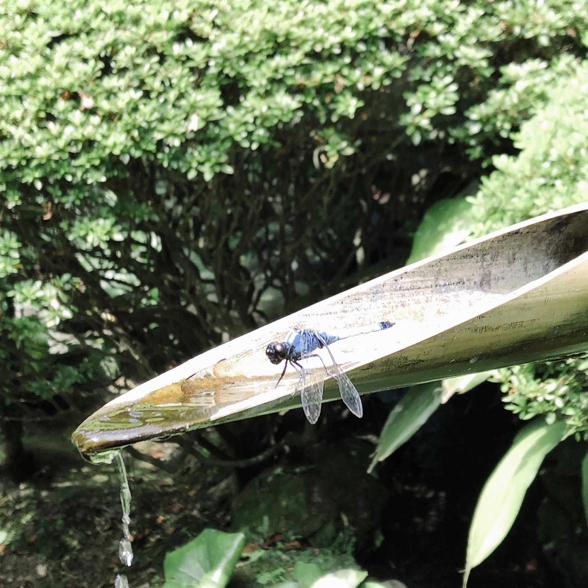
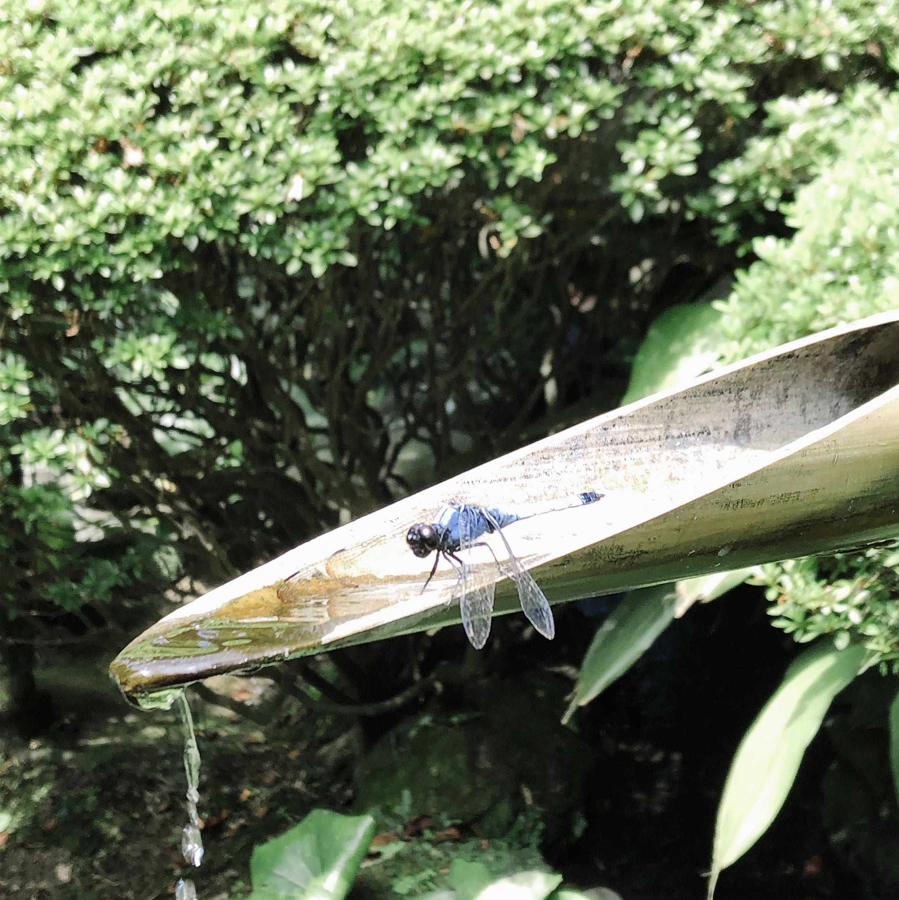
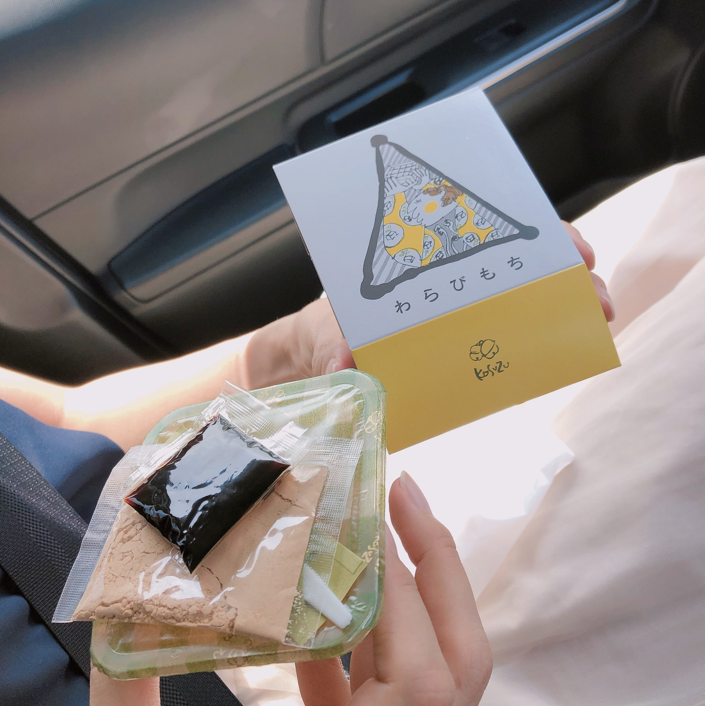
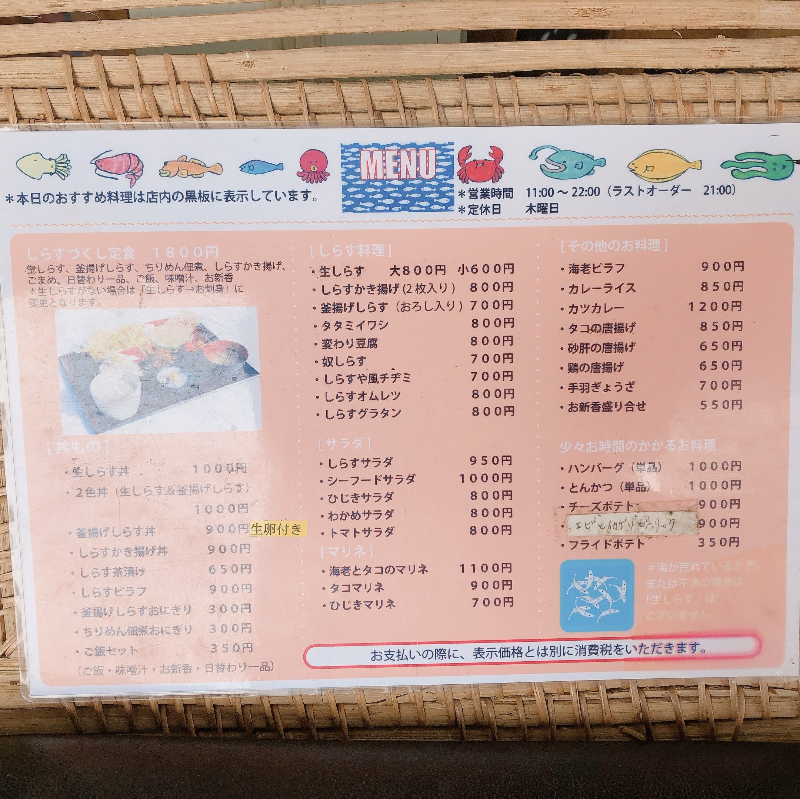
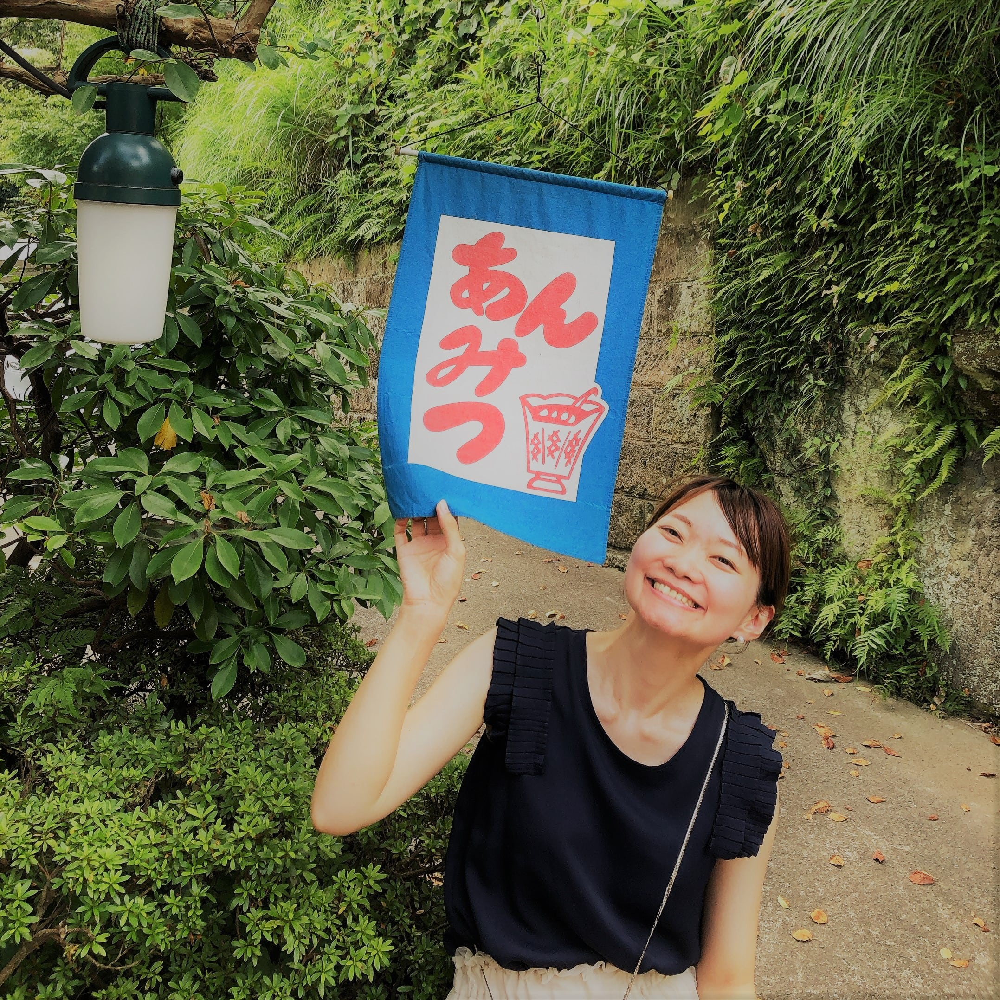
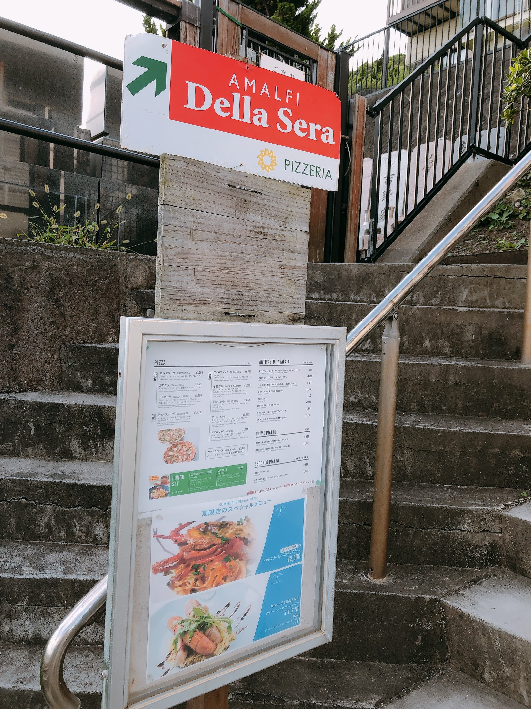
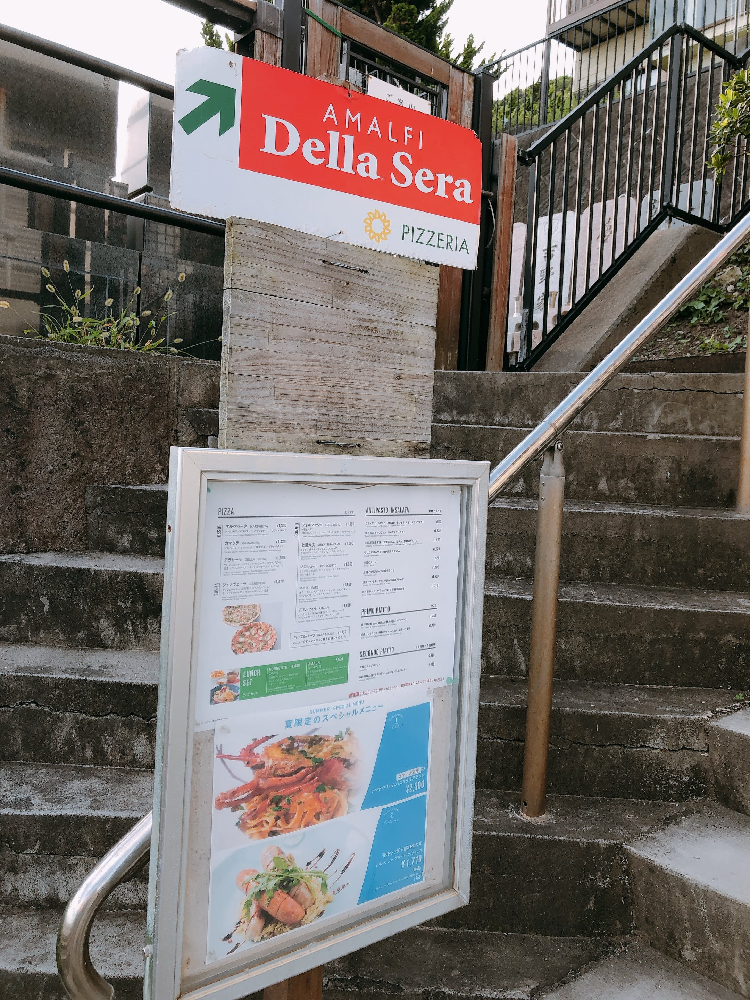

08:52 鎌倉駅
鎌倉に来ましたっ！！東京から1時間で来れるなんて近すぎる♪
車を借りてドライブ出発～！
09:30 報国寺
竹の庭と呼ばれる報国寺。10時過ぎるともうゆっくり歩けなくなるらしいので早めに来ました！

 

竹の緑が気持ちいい～♪そしてウグイスみたいな鳴き声をする鳥の歌が素敵でうっとり。サルスベリの紅色もこの時期綺麗なんだね♪♪
10:15 MARUYAMA COFFEE

鎌倉駅東側の小町通を通る途中見つけたカフェ。これぞ本物のコーヒー！！と二人とも驚嘆。もう一度行きたい！！
その後、近くのわらび餅も(´～｀)ﾓｸﾞﾓｸﾞ♪♪では海沿いの134号線ドライブへLet's Go!!

海だ！空だ！あ、今週の御言葉「早く行いなさい」にちなんだ88-88 ！パリパリ、パリパリ笑
10:50 しらすや 腰超漁港前店
湘南でしらすを食べるならこのお店！初め、近くにある休業中の本店に行ってしまって時間ロスしてしまったけど
無事に到着。駐車場にも入れた！それほど待たずに入れた！


しらす、海鮮、うますぎる(´～｀)ﾓｸﾞﾓｸﾞ。ぺぶろよ～
13:15 茶房 雲母
鎌倉駅西側の閑静な住宅街のなかにある白玉が有名な茶屋。時間に関係なく並ぶらしい。行ってみよう！


結局、2時間頑張りました～(´∀｀；)猛暑の中だったけど、影になっていたし、時折風が吹いて、感謝です。
やんちゃん「宇治白玉あんみつ」、ななみ季節限定「ずんだ白玉」。白玉、ズンってお腹にくるね笑笑笑。
カーシェアの駐車場近くだったのはありがたい☆
16:45 KANNON COFFEE kamakura
長谷寺近くにあるSNSで話題のカフェ。あら可愛いらしいお店。乙女心掴むわね♪

やんちゃんはピーチの...ななみはパイナップルとゼリーとサイダーが入ったやつ...名前忘れちゃった(-_-;)けど、喉越しスッキリ！
ローズマリーの存在感抜群！！お土産のラッピングもお洒落ではないか♪♪
17:30 アマルフィイ デラセーラ
七里が浜にある180度オーシャンビューのイタリアン。予約枠が埋まっていたけど、数日前にキャンセルが出たのか、ひょっこり奇跡的に予約が取れた！
日の入りは18:45。それまでの30分間が夕陽のショータイムらしい。夕陽の前の青い夏空＆海も見たい。そんな欲張りな思いで17:30に予約
 

車を停めて、柵もない江ノ電線路をまたいで看板通り階段を登る。草の生い茂る石段をひたすら上ると134号線から
見上げて見えていた赤いパラソルとテラコッタの床。そして、登り切って私たちの目の前に現れたのは、、、
絶景のロケーション！！何これっ！テンションあがる！！やばいっ！！！かーみーさーまー！！！！
そして、風がなんとも気持ちよすぎる。昼間だったら蒸し蒸ししてたかもだから、夕方でよかったかも。

もうこれだけでいい。このままここにいたい。。最高。。。
写真撮るのと、この気持ちよさを堪能するのと、食べるので忙しい笑
そして、富士山が見えるよ！背景のような富士山、初めてみる！！ 美しすぎる。。どうしたらこの素晴らしさを写真に収められるだろうか。最大限シャッターを切ってみよう。
そして、富士山が見えるよ！背景のような富士山、初めてみる！！ 美しすぎる。。どうしたらこの素晴らしさを写真に収められるだろうか。最大限シャッターを切ってみよう。
日が落ちてきた。美しい。。せいれいさまーー！！！
感無量(´；ω；`)ｳｯ…
お店の人曰く、こんな綺麗な夕陽を見れるのは珍しいそうで、、、プレゼントに感謝感謝。。 下からも見てみよう！
お店の人曰く、こんな綺麗な夕陽を見れるのは珍しいそうで、、、プレゼントに感謝感謝。。 下からも見てみよう！


あぁ。
完。